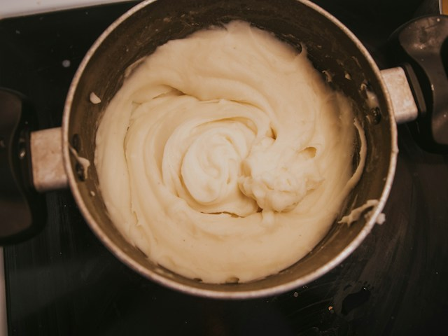

Mashed Potatoes

Description
You might would think that making mashed potatoes was simple. Well
you'd be correct, sort of. Mashed poatoes is a dish that is simple,
but truely great mashed poates takes exact proportions of the
ingredients to get that wonderful flavor. Thankfully, as long as you
have this recipe handy you won't have worry about the proportions.
Ingredients
- 2 lbs. red potatoes
- 1/3 cup whole milk
- 3 tablespoons salted butter
- 1/4 teaspon black pepper
- 1 1/2 teaspons sea salt
Steps
- Peel the potatoes, then wash them placing them in a pot to cook
them in.
- Slice the potatoes into thin disks, washing them again after
doing so; then cover with water.
- Place on the stove over high heat, bring to a boil; turn the
heat down, maintaing a steady boil.
- Boil for around ten minutes, then check to see if they are soft
using the tip of a knife.
- Once done remove from stove and drain the water off.
- Mash the potatoes with a potato masher, then add in the butter,
gently folding it in with a spoon.
- Add in the black pepper and salt, stirring them in.
- Once the butter has melted, add the milk in by whipping it.
- Taste the mashed potatoes, adding more salt and pepper in if
desired.
Home